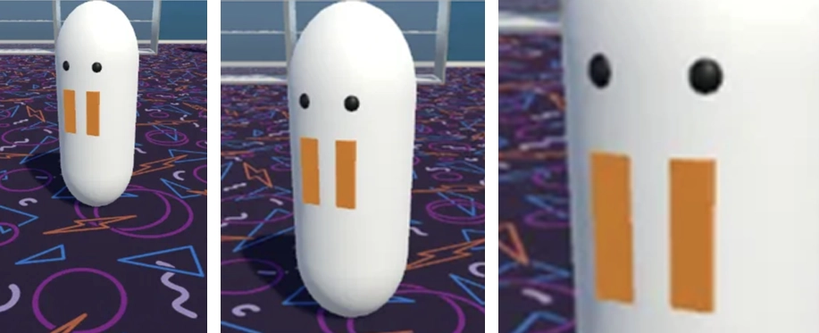

02 / From the workbench
Notes from The back room.
The odd little details behind the shop, the cards, and the rules we’re trying to preserve.
02 / From the workbench
The odd little details behind the shop, the cards, and the rules we’re trying to preserve.
Updated:
Now that the capsule gang can talk and (sort of) play Magic, I'm, naturally, pivoting to something completely different – the card purchasing, deckbuilding, and collection systems.

Walking up to the singles counter and pressing 'E' on individual cards is chaotic and makes it hard to pick the right card amongst the rows. I started sketching some UI screens with pen and paper to sort out a computer terminal UI interface that will handle singles purchasing, your card collection, deckbuilding, and pack opening.
After talking through the plan with Claude, I decided to start building the UI using Unity's UI Toolkit with USS since it's so much like the CSS I use all the time. This will let me have full control over the styling of the UI and potentially export some of the tools I make to the web with minimal effort. I also decided to create a basic info panel using the same UI toolkit and USS for when the player approaches a challenger NPC. Now when you walk close enough to one, you see a small box floating beside them that shows their name, reputation number (faked for now), deck type, and difficulty level.
This brought up a need to design a basic reputation and difficulty system, so I talked one through with ChatGPT. The plan I decided on is based around five difficulty tiers; easy, average, and difficult for regular challenger NPCs, very hard for the yearly 'boss' challenger NPC, and insanity for the Time Wizard's final challenge. For now, the rep system works in increments of 50 – a win against an easy opponent rewards 50 rep, average rewards 100, difficult rewards 150, and very hard rewards 200. I split each of the seven years covered in the game into multiple phases based on when new sets are released, turning the 7 major game phases into 19 phases. Each phase requires the player reaches a certain rep threshold to advance, and the player must also defeat a 'boss' NPC at the end of each year. Each phase takes progressively more rep to advance through matched (for now) to a certain amount of wins against the other challengers in the shop. In the last year of the game, the final challenge is to beat the Time Wizard's insanity deck, which is how you beat the campaign and unlock Free Mode. He'll only challenge you once you've proven yourself worthy with a steep rep requirement.
The phases are built around new Magic sets being released to make sure each time you come back to the shop, there are new products on the shelves. The phase breakdown, for now, is: 1993 - p1: Alpha + Beta, p2: Unlimited + Arabian Nights | 1994 - p1: Antiquities + Revised, p2: Legends + The Dark, p3: Fallen Empires | 1995 - p1: Fourth, p2: Ice Age, p3: Chronicles + Homelands | 1996 - p1: Alliances, p2: Mirage | 1997 - p1: Visions + Fifth, p2: Weatherlight, p3: Tempest | 1998 - p1: Stronghold, p2: Exodus, p3: Urza's Saga | 1999 - p1: Urza's Legacy + Sixth, p2: Urza's Destiny, p3: Time Wizard.
Finally, I added a boss capsule to the game room in the shop and wired up the info panel to test it out. After playing around with the styling and positioning, it's looking good enough to move on. I've split my development project doc into two smaller docs since it was starting to get pretty long – a dev log of active and finished entries and a development roadmap of milestones for the near future. Now there are three running project docs, but I think keeping the information focused and separated will help keep the project from turning into a mess.
The store is primed and ready to be taken over by my gang of capsule people, if they could just stop standing around doing nothing all day. It's time to get these loitering freeloaders some basic interactions.

Using the same 'press E' interaction set up with the singles counter, I made each NPC approachable and interactive. Pressing 'E' triggers a line of dialogue to show in the game console, since I don't have the dialogue system fully implemented yet. They just say random lines of flavor text for now based on their roles in the shop.
For the NPC that's waiting to be challenged, you can interact with them and make one of three choices: win match, lose match, or draw. These will help for testing as I start to make the basics of the match/play system work. For now, all I want to focus on is getting lands, creatures, and direct damage spells working. I had Claude put together 2 small 40-card decks for testing purposes consisting of only those card types, and then create a simple rules engine to get the basics working. It looks ugly as shit and everything's way too small, but you can at least draw a hand of cards, play lands, creatures, and spells. The basic phase order system is in place, and the basics of the card stack prio system are working. Each player correctly starts with 20 life and life gets deducted when damage is successfully dealt. Mana cost, tapping, power and toughness values are all implemented and interact properly. He also created a bare-minimum AI opponent that plays the cards it's capable of playing. He put all this together in a matter of a couple minutes, of course.
Lastly, I had Claude set up a save slot metadata layer so the player can save their progress. We're getting closer to being able to prototype and test the progression system of the campaign. It's going to take some work to clean up the terrible gameplay UI while playing Magic, but I have some ideas cooking for it.
A few minutes of frolicking around the shop as a walrus-capsule makes it painfully obvious that this shop is terrible. There's nothing in it but some hideous old arcade carpeting, some plain blue walls with simple white baseboard molding, and a couple empty store counters I made in Blender and UModeler.

I found several potentially useful free assets on the asset store and imported them into the project. Cosmic Retro Rec Room is free and has a couple interesting props like an arcade machine and video game console that I could customize to add some character to the shop or player bedroom scene. Arcade Machines PolyPack is another free low poly pack with a few simple arcade machines that could be useful for populating the shop's interior. Synty Simple Town Lite is a free low poly pack with a few simple storefronts and a city sidewalk/roadway with a couple cars that could be useful for populating the shop's outdoor surroundings. Low Poly Office Set 1 is another free low poly pack that has over 140 generic office interior props and furniture. Interiors A will be perfect for converting into the convention center scene where tournaments will be held.
The goal is to ultimately play games of Magic against the computer, so taking the first steps towards setting that system up make sense at this point as well. I had Claude set up a basic drag and drop uGUI framework for the match/play scene with a supporting data layer underneath it to load deck data for both the player and the NPC. This foundation will let me start to make games of Magic actually work down the line, and didn't depend on any external resources.
Magic won't be very fun to play and the store will always look pretty boring if the card art never populates from the filtered Scryfall database, so that's another thing I can take care of now; the card art and data pipeline. I filled the 7 singles cabinets' shelves with 60 card prefabs each I had made earlier when I was first learning Blender. The card art gets loaded at runtime, and tries to find the art in three places: first, in the game's in-memory cache; second, in your disk cache; and third, its online Scryfall database URL if no image is cached. The card meta data is pulled directly from the filtered Scryfall All Cards JSON database I made earlier.
Now that the singles are showing their art, I had Claude set up a basic purchasing loop with a persistent player wallet and the ability to purchase the singles on the shelf through a very basic uGUI UI based around approaching the counter and pressing 'E' to interact. Buying a pack correctly subtracts its cost from your wallet and adds it to your collection, which you currently can't browse.
Lastly, I added six new capsule people to the scene in different locations to start wiring up some basic NPC interaction experiments, and gave them all different colors to keep track of them. I added stand-ins for the shop keeper, the Time Wizard, a browsing customer, two kids playing each other in the game room, and another kid waiting in the game room to be challenged. Next time, I'll have a bunch of new toys to play with.
I have a plan, some tools, and a very empty card shop scene in Unity waiting to be filled with stuff. Cool stuff. But also, a lot of boring stuff, like shelves, tables, chairs, and other interior props. Do I want to spend the next year of my life modeling furniture? Not particularly. Time to grab some assets.

Some of the first things I added to the Unity project were things like Amplify Bloom for eventual post-processing lighting effects, Dreamteck Splines for things like NPC wandering paths and building things like wire racks, Brewed Ink CRT-Free for adding CRT scan lines to the computer screens in the game, Graphy Ultimate FPS Counter to eventually test and monitor the game's performance, Omnisave for saving and loading game progress, and UModeler X for 3D modeling inside Unity – a tool I had already previously used to make a simple singles shelf and store checkout counter.
I have my eye on several more assets, but this is enough for now to get some work done in Unity while I wait for the others to go on sale. The asset store has crazy sales if you just wait around long enough.
One of my first goals is to get a walkable character controller working in the game, so I can walk around my scene and marvel at all the empty space with nothing in it. I was always fond of the camera system in World of Warcraft, so like any good creative, I decided to rip it off completely. I added a capsule stand-in for the character to the scene, and used Unity's built in Cinemachine system to implement the camera controller. At first the player was just a capsule and it was hard to tell which direction it was looking, so I had Claude give it a 'face'. He promptly proceeded to turn my capsule into a weird walrus looking creature with eyes and what can only be described as rectangular tusks under them. Good enough.

After some fine tuning and testing, the mouse and keyboard now work just like they do in WoW – click and drag to orbit the camera, right click and drag to move the camera and player at the same time, scroll to zoom, zoom in and out of first person, WASD movement, and spacebar to jump. It was a little wonky at first, but it all works well after some tweaking and rounds of testing & revisions.
I've narrowed the project's scope down to 25 editions and some extra printings, so it's time to figure out how each set handled its booster packs. They all feature booster packs of varying card quantities and rarities, and I want to be sure that opening a pack in the game is just like opening one in real life.

After doing a lot of research, it looks like there are three main pack sizes in the game's scope: 8-, 12-, and 15-card packs. Here's the full breakdown:
All of the 15-card packs consist of 11 commons, 3 uncommons, and 1 rare. All of the 8-card packs consist of 6 commons and 2 cards from a shared pool of the uncommons and rares, with at most one rare in a pack. The two 12-card packs are a little weird. Alliances packs consist of 9 commons, 2 uncommons, and 1 rare. Chronicles, however, have 9 commons and 3 cards from the shared uncommon/rare pool, and can include anywhere from zero to three rares in one pack. That would be pretty cool getting three rares in one pack, too bad it's...Chronicles.
There are other quirks about basic lands as well as snow covered lands in Ice Age. I had Claude take a quick pass at the real world data of how these should be distributed and applied all of this logic to the pack roller script in the game.
Now that things are starting to come together, my project planning document had gotten pretty unwieldy. I've decided to split it into two distinct docs now that some progress is being made; a project knowledge doc and a development doc. This will make things easier for me to keep track of, as well as for Claude to make running edits to. I've been typically attaching the doc to a new conversation and having him make running edits as we work, but I'm finding Claude loves to journal. I have to keep a close eye on his edits to the docs as he tends to try to capture every little detail and append information chronologically rather than keeping it organized in sections. I usually have to tell him to capture only crucial information, skip revisions and story telling about my decision making process, and to fold info into appropriate sections rather than appending chronologically. Splitting the doc into more purposeful sub documents should hopefully help.
Wizards of the Coast has a public database and API called Scryfall that they provide for developers to use in their fan projects. They also provide a downloadable card database for every card ever made since 1993. The only issue: it's a little large for my game at 2.9GB.

There's always the option of pulling art directly from the API while playng, but that would impact the game's performance pretty drastically, especially when looking at the wall of singles sitting on their shelves. When I saw that the database file was a JSON file, I figured I could somehow edit its contents and filter it down to only the cards I needed. I explained to Claude which sets I wanted to include and he made me a Python script to run in VS Code to filter the database.
I had to go through a few rounds of this process since we kept missing certain unexpected database contents. Eventually, I was able to create a filtered version of the database that only included the cards I need for the game – 25 core and expansion editions from Alpha through Urza's Destiny; the Anthologies card printings; the 1996 Pro Tour card printings; the 1997-99 World Championship card printings; no Portal editions; no Unglued; no Renaissance; English language cards only; no extras like play tokens or blank cards. I also set up a runtime parsing script to load the filtered data at game launch. With the list filtered down to a mere 6,792 cards, I can start making them do stuff.
Getting set up with the right tools and environment is important as a designer, so I got a little obsessed with finding a smart, powerful workflow to help me stay productive while learning by doing. I don't want to reinvent the wheel, nor do I want to rely completely on existing assets and AI.

This being my first attempt at making a game, I want to make sure if I screw anything up, I can fix it easily. I decided to use a Git repository for version control, and had Claude walk me through setting it all up. I'm getting comfortable running commands in VS Code's terminal and checking on the repo's status, editing tracking filters, and pushing/reverting changes straight from VS Code's terminal or source control panel.
I know I don't want to model every object and design every system in the game from scratch, so I started making a wish list of assets in the Unity Asset Store I feel would be useful for the project. I like the simplicity of low poly assets for their playful look and their potential to be edited, and after looking through the vast majority of them, I think I like the Synty packs the best. I'll probably wind up using a lot of the furniture and props, editing them as necessary to fit the game's aesthetic. I also found some low poly assets for labrador retrievers, 80s/90s themed bedrooms, a simple warehouse that could be converted into a convention center, and some modular 'Cute Characters' that have potential to be modified with '90s clothes and accessories.
I'm also looking into some Unity plugins that could help speed up development, like a dialogue system (Pixel Crushers), a save/load system (OmniSave), and a splines tool (Dreamteck Splines) for NPC pathing and making stuff like wire racks. I want to make sure I have the right tools to make the game as efficiently as possible, while still learning and developing my skills as a game designer and developer.
Now that I feel like I have better tools and a better foundation to work from, the next step I want to deal with is figuring out the Scryfall card database.
The idea for this game has been taking shape as an amorphous blob of ideas drifting around in my head for years now. Turning my scatterbrained thoughts into a coherent game was the first challenge.

I began brainstorming video game ideas during my free time after getting laid off, exploring a few different game concepts on pen and paper each night as I sat in front of the TV. I have a few different ideas for games, but this one has the strongest connection to my personal life and the most potential for me to actually follow through with and complete. After making some sketches, lists, and concept/gameplay loop outlines, I decided I was going to need a better way to keep track of such a daunting project.
I started talking the concept through with Claude, and created a project for the game to keep everything managed under one roof. We began creating and revising a project planning document that finally helped organize and piece together the different concepts and ideas that previously lived only in my head. The process of developing the planning document took a couple weeks of ideating, revising, refining, rewriting, and organizing, and soon our project document had turned into two documents: a planning doc and a development roadmap.
I had already taken an interest in game development and was excited to dive into the world of indie game creation. I had already tried my hand at making a few things in GameMaker in the recent past, following some tutorials on YouTube to make a few card game systems like a drag and drop game field, making a deck of cards that you can draw a hand from, and a couple other things. After a while, I decided that I was interested in deveoping games enough that I should probably switch to an engine that is more standard in the industry, and started looking into things like Godot, Unreal, and Unity. Unity seemed like the best fit for what I wanted to accomplish and is a pretty widely used engine in the industry, so I installed the latest version and started over.
I spent a few weeks going through Unity Learn's beginner tutorials to make sure I understood the basics and had a solid foundation before trying to make anything this time. I spent time browsing the Unity asset store, watching videos of what other people have made, learning about development practices and methods, and exploring different Unity plugins and integrations.
I had little experience in 3D modeling/animation, but I was determined to learn whatever I needed to bring my vision to life. I had started using Blender to lay out the basic floor plan for the shop with simple floor tiles and wall segments. I modeled a few cabinets since they're just modified cubes, so it felt like a manageable beginner task. It wasn't long before I had a barebones card shop scene in Unity to start playing around with.
Armed with a thorough plan, the right tools, some basic knowledge, a nearly empty Unity card shop scene, and weirdly obsessive determination, I was ready to start making stuff.
It's been five months since I was laid off from my job as a designer & art director at a local agency, the job market for designers is brutal, and I'm at a loss for how to keep going in my career. All I know is that I still have a passion for design and a desire to create cool shit with computers like I always have.

I started teaching myself how to use graphic design software as a teenager in the during the early days of the internet, when things like Macromedia Flash and Newgrounds.com were all the rage. I dove into tutorial after tutorial, learning the programs, skills and techniques that would later become part of my professional toolkit.
I went on to get a BFA with a concentration in graphic design in 2013, and have been working as a designer for creative agencies for the last thirteen years. I've had my hand in countless projects across print, digital, web, motion, and video formats by now. It's my second time getting laid off in this industry, and it's always brutal trying to find your next opportunity in this extremely oversaturated market. Tired of leaving my fate up to other people, I've decided to take this chance to pursue my passion and build something for myself, while continuing to hone and develop my professional skillset and push myself into an adjacent discipline.
I've loved video games since my parents first bought my brother and I an NES for Christmas one year. I was born at just the right time to fall in love with the world of gaming, computers, the internet, and to experience the golden age of Magic: The Gathering as it played out in real time. I remember being so excited to go to Newbury Comics, knowing I'd be coming home with a few new CDs, a new issue of InQuest Magazine, and a couple new packs of Magic cards to open. I hung around the local card shop, checking out singles and browsing shelves of boosters and decks with my brother and our friends, scraping together whatever meager funds we could to afford more. I even went to a couple sealed deck tournaments and had a blast building a deck on the spot, being around so many other people with the same interests, browsing all the vendors and trade booths, and just exploring this exciting new world of TCG gaming.
The 1990s era of Magic is such a nostalgic and coveted time in the game's history, and having lived through it first hand, I see it as a natural fit for my first foray into game development. People should have a way to relive the magical experience of playing in that era, and now it's easier than ever to make that happen. Leveraging my own background in design and development and combining that with the tools available today, I'm more confident than ever that now is the time for me to pursue this passion project.
What do I hope to accomplish? I hope to create a game that captures the essence of the 1990s Magic: The Gathering experience and has the potential to bring it to a new generation of players. Without Wizards of the Coast's endorsement, I can't realistically ever distribute or sell the game, which has always been fine with me. I just want to make the game that's been in my head for years, and to be able to say I developed a game that I'm proud of all on my own. I only hope to share the journey and the end results with anyone who's interested, and to build a supportive community of other people who love '90s Magic.
My goal is to keep this website, the YouTube channel, the Discord, and the forum actively updated every week or two, whenever I have the time and energy to do so. Won't you join me on this radical, magical journey?